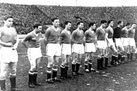
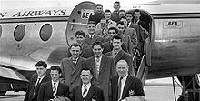

Era Sir Matt Busby (1945–1969)

Pada tahun 1945, Matt Busby ditunjuk menjadi manajer dari tim yang berbasis di Old Trafford ini. Dia meminta sesuatu yang tidak biasa pada pekerjaannya, seperti menunjuk tim sendiri, memilih pemain yang akan direkrut sendiri dan
menentukan jadwal latihan para pemain sendiri. Dia telah kehilangan lowongan manajer di klub lain, Liverpool F.C., karena pekerjaan yang diinginkannya itu dirasa petinggi Liverpool adalah pekerjaan seorang direktur, tetapi
United memberikan kesempatan untuk ide inovatifnya. Pertama, Busby tidak merekrut pemain, melainkan seorang asisten manajer yang bernama Jimmy Murphy. Keputusan menunjuk Busby sebagai manajer merupakan keputusan yang sangat
tepat, Busby membayar kepercayaan pengurus dengan mengantar United ke posisi kedua liga pada tahun 1947, 1948 dan 1949 dan memenangkan Piala FA tahun 1948. Stan Pearson, Jack Rowley, Allenby Chilton, dan Charlie Mitten memiliki
andil yang besar dalam pencapaian United ini.
Charlie Mitten pulang ke Colombia untuk mencari bayaran yang lebih baik, tetapi kemampuan pemain senior United tidak menurun dan kembali meraih gelar Divisi Satu pada 1952. Busby tahu, bahwa tim sepak bola tidak hanya
membutuhkan pengalaman pemainnya, maka, dia juga berpikir untuk memasukkan beberapa pemain muda. Pertama-tama, pemain muda seperti Roger Byrne, Bill Foulkes, Mark Jones dan Dennis Viollet, membutuhkan waktu untuk menunjukkan
permainan terbaik mereka, akibatnya United tergelincir ke posisi 8 pada 1953, tetapi tim kembali memenangkan liga tahun 1956 dengan tim yang usia rata-rata pemainnya hanya 22 tahun, mencetak 103 gol. Kebijakan tentang pemain
muda ini mengantarkannya menjadi salah satu manajer yang paling sukses menangani Manchester United (pertengahan 1950-an, pertengahan akhir 1960-an dan 1990-an). Busby mempunyai pemain bertalenta tinggi yang bernama Duncan
Edwards. Pemuda asal Dudley, West Midlands memainkan debutnya pada umur 16 tahun di 1953. Edwards dikatakan dapat bermain di segala posisi dan banyak yang melihatnya bermain mengatakan bahwa dia adalah pemain terbaik. Musim
berikutnya, 1956–57, mereka menang liga kembali dan mencapai final Piala FA, kalah dari Aston Villa. Mereka menjadi tim Inggris pertama yang ikut serta dalam kompetisi Piala Champions Eropa, atas kebijakan FA. Musim lalu, FA
membatalkan hak Chelsea untuk tampil di Piala Champions. United dapat mencapai babak semi-final dan kemudian dikandaskan Real Madrid. Dalam perjalanannya ke semi-final, United juga mencatatkan kemenangan yang tetap menunjukkan
bahwa mereka adalah tim besar, mengalahkan tim juara Belgia Anderlecht 10–0 di Maine Road.

Tragedi terjadi pada musim berikutnya, ketika pesawat membawa tim pulang dari pertandingan Piala Champions Eropa mengalami kecelakaan saat mendarat di München, Jerman untuk mengisi bahan bakar. Tragedi München 1958 tanggal 6
Februari 1958 merenggut nyawa 8 pemain tim—Geoff Bent, Roger Byrne, Eddie Colman, Duncan Edwards, Mark Jones, David Pegg, Tommy Taylor dan Liam "Billy" Whelan—dan 15 penumpang lainnya, termasuk beberapa staf United, Walter
Crickmer, Bert Whalley dan Tom Curry. Terjadi 2 kali pendaratan sebelum yang ketiga terjadi kesalahan fatal, yang disebabkan tidak stabilnya kecepatan pesawat karena adanya lumpur. Penjaga gawang United Harry Gregg
mempertahankan kesadaran saat kecelakaan itu dan di bawah ketakutan pesawat akan meledak, menyelamatkan Bobby Charlton dan Dennis Viollet dengan mengencangkan sabuk pengamannya. Tujuh pemain United menginggal dunia di tempat
sedangkan Duncan Edwards tewas ketika perjalanan menuju rumah sakit. Sayap kanan Johnny Berry juga selamat dari kecelakaan itu, tetapi cedera membuat karier sepak bolanya berakhir cepat. Dokter München mengatakan bahwa Matt
Busby tidak memiliki banyak harapan, namun ia pulih dengan ajaibnya dan akhirnya keluar dari rumah sakit setelah dua bulan dirawat di rumah sakit. Ada rumor bahwa tim akan mengundurkan diri dari kompetisi, namun Jimmy Murphy
mengambil alih posisi manajer ketika Busby dirawat di rumah sakit, klub melanjutkan kompetisinya. Meskipun kehilangan pemain, mereka mencapai final Piala FA 1958, di mana mereka kalah dari Bolton Wanderers. Akhir musim, UEFA
menawarkan FA untuk dapat mengirimkan United dan juara liga Wolverhampton Wanderers untuk berpartisipasi di Piala Champions untuk penghargaan kepada para korban kecelakaan, namun FA menolak. United menekan Wolves pada musim
berikutnya dan menyelesaikan liga di posisi kedua klasemen; tidak buruk untuk sebuah tim yang kehilangan sembilan pemain akibat Tragedi München.
Busby membangun kembali tim di awal dekade 60-an, membeli pemain seperti Denis Law dan Pat Crerand. Mungkin orang yang paling terkenal dari sejumlah pemain muda ini adalah pemuda Belfast yang bernama George Best. Best memiliki
keatletikkan yang sangat langka. Tim memenangkan Piala FA tahun 1963, walaupun hanya finis di urutan 19 Divisi Satu. Keberhasilan di Piala FA membuat pemain menjadi termotivasi dan membuat klub terangkat pada posisi kedua liga
tahun 1964, dan memenangkan liga tahun 1965 dan 1967. United memenangkan Piala Champions Eropa 1968, mengalahkan tim asuhan Eusébio SL Benfica 4–1 di pertandingan final, menjadi tim Inggris pertama yang memenangkan kompetisi
ini. Tim United saat itu memiliki Pemain Terbaik Eropa, yaitu: Bobby Charlton, Denis Law, dan George Best. Matt Busby mengundurkan diri pada tahun 1969 dan digantikan oleh pelatih tim cadangan, Wilf McGuinness.